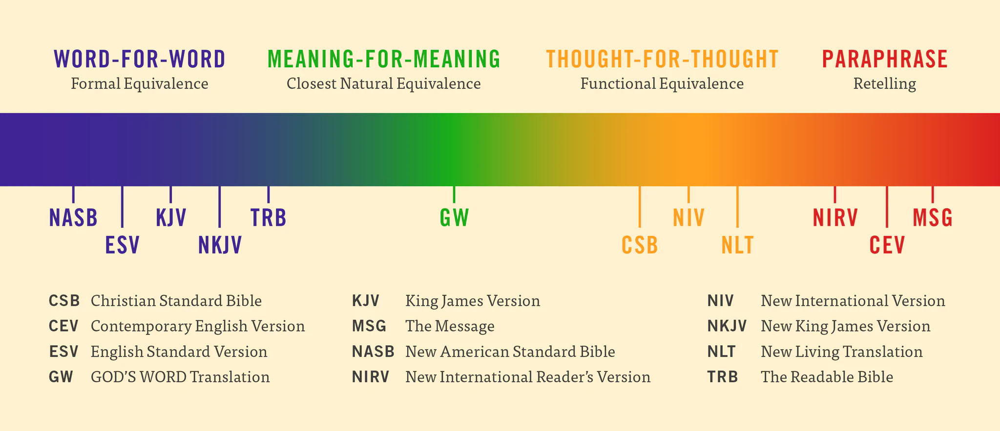
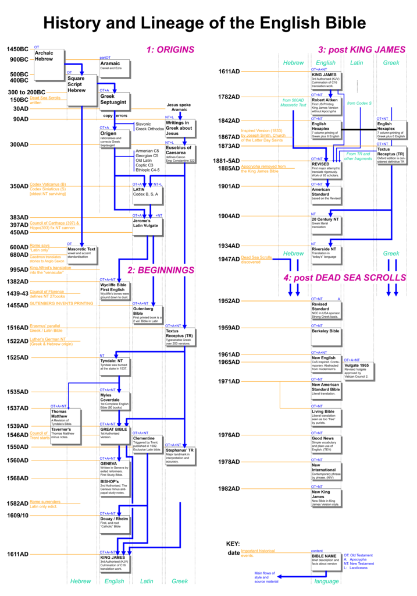

Reading the Bible is one of many spiritual practices that bring you closer to God. I believe we have elevated directly reading passages in scripture over all other spiritual disiplines.
Scripture is often misinterpreted and sometimes these misinterpretations get a fair amount of traction. This is because not everyone knows how to appropriatly read the Bible using hermeneutics or is willing to put in the time and effort required.
There is a vast amount of information, instruction and guidance in the Bible; most, if not all is good. However there are times when different views on certain passages tend to cause dissagrement and division that distract from the most important truth: Jesus is God and died for us.
There have been large periods of time when people did not have access to Bibles. In fact before the Gutenberg Bible was published in 1455 all Bibles were hand copied and exedingly rare. Even after 1455 only the rich had access to Bibles. Therefore the Bible is not essential for salvation or for having a Christian life.
